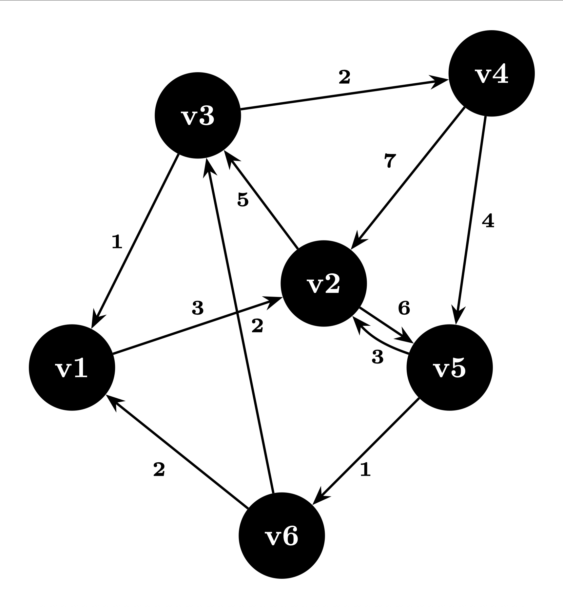

Create and manipulate graphs#
import graph_tool.all as gt
import numpy as np
import scipy.sparse
import matplotlib.pyplot as plt
Creating graphs#
Submodules involved:
collections.ns
utils

graph-tool provides the following ways:
import graph_tool.all as gt
Edge list#
# edge list
elist = [
(0, 1), # v1 → v2
(1, 2), # v2 → v3
(2, 3), # v3 → v4
(3, 4), # v4 → v5
(4, 5), # v5 → v6
(5, 0), # v6 → v1
(1, 4), # v2 → v5
(2, 0), # v3 → v1
(4, 1), # v5 → v2
(3, 1), # v4 → v2
(5, 2), # v6 → v3
]
# Create directed graph
g = gt.Graph(directed=True)
# Add 6 vertices
g.add_vertex(6)
# Add edges from list
g.add_edge_list(elist)
# Add labels (v1 to v6)
label_prop = g.new_vertex_property("string")
for i, label in enumerate(["v1", "v2", "v3", "v4", "v5", "v6"]):
label_prop[g.vertex(i)] = label
# Draw the graph
gt.graph_draw(
g,
vertex_text=label_prop,
vertex_fill_color=[0, 0, 0, 1], # black fill
vertex_font_color=[1, 1, 1, 1], # white label text
vertex_size=30,
edge_arrow_size=10,
output_size=(500, 500)
)
/nb/yuanming/miniconda3/envs/gt/lib/python3.13/site-packages/graph_tool/draw/cairo_draw.py:545: UserWarning: Unknown edge attribute: font_color
warnings.warn(f"Unknown {kind} attribute: " + str(k), UserWarning)
/nb/yuanming/miniconda3/envs/gt/lib/python3.13/site-packages/graph_tool/draw/cairo_draw.py:545: UserWarning: Unknown edge attribute: arrow_size
warnings.warn(f"Unknown {kind} attribute: " + str(k), UserWarning)

<VertexPropertyMap object with value type 'vector<double>', for Graph 0x7fa3579a42b0, at 0x7fa357869470>
Adjacency list#
# adjacency list
adj = {
0: [1], # v1 → v2
1: [2, 4], # v2 → v3, v5
2: [3, 0], # v3 → v4, v1
3: [4, 1], # v4 → v5, v2
4: [5, 1], # v5 → v6, v2
5: [0, 2], # v6 → v1, v3
}
def elist():
for u, vw in adj.items():
k = 0
for v in vw:
k += 1
yield u, v
if k == 0:
yield u, None # include isolated nodes
g = gt.Graph(directed=True)
g.add_vertex(6) # manually ensure all 6 nodes exist
g.add_edge_list(elist())
# Add labels (v1 to v6)
label_prop = g.new_vertex_property("string")
for i, label in enumerate(["v1", "v2", "v3", "v4", "v5", "v6"]):
label_prop[g.vertex(i)] = label
# Draw the graph
gt.graph_draw(
g,
vertex_text=label_prop,
vertex_fill_color=[0, 0, 0, 1],
vertex_font_color=[1, 1, 1, 1],
vertex_size=30,
edge_arrow_size=10,
output_size=(500, 500)
)

<VertexPropertyMap object with value type 'vector<double>', for Graph 0x7fa35bdef6f0, at 0x7fa357869630>
Sparse Matrix#
# sparse matrix
# Create a 6x6 sparse adjacency matrix (weight=1 if edge exists)
adj_matrix = np.array([
[0, 1, 0, 0, 0, 0], # v1 → v2
[0, 0, 1, 0, 1, 0], # v2 → v3, v5
[1, 0, 0, 1, 0, 0], # v3 → v1, v4
[0, 1, 0, 0, 1, 0], # v4 → v2, v5
[0, 1, 0, 0, 0, 1], # v5 → v2, v6
[1, 0, 1, 0, 0, 0], # v6 → v1, v3
])
# Convert to sparse COO matrix
a = scipy.sparse.coo_array(adj_matrix)
# Extract row (source), col (target), data (weight)
s, t, w = scipy.sparse.find(a)
# Combine into edge list with weights
es = np.array([s, t, w]).T # shape: (num_edges, 3)
# Create directed graph and add edges with weights
g = gt.Graph(directed=True)
g.add_vertex(6)
weight = g.new_edge_property("int")
g.add_edge_list(es, eprops=[weight])
g.edge_properties["weight"] = weight
# Add vertex labels
label_prop = g.new_vertex_property("string")
for i in range(6):
label_prop[g.vertex(i)] = f"v{i+1}"
# Draw the graph
gt.graph_draw(
g,
vertex_text=label_prop,
edge_text=weight,
vertex_fill_color=[0, 0, 0, 1],
vertex_font_color=[1, 1, 1, 1],
vertex_size=30,
edge_pen_width=1.2,
edge_arrow_size=10,
output_size=(600, 600)
)

<VertexPropertyMap object with value type 'vector<double>', for Graph 0x7fa3579a42b0, at 0x7fa357a1c600>
Loading graph from file#
# g.save("data/graph.xml.gz")
graph-tool has a repo of networks: https://networks.skewed.de/
Property maps in graph-tool#
Property maps are a way of associating additional information to the vertices, edges, or to the graph itself. There are thus three types of property maps: vertex, edge, and graph. They are handled by the classes VertexPropertyMap, EdgePropertyMap, and GraphPropertyMap. Each created property map has an associated value type, which must be chosen from the predefined set:
# from gt file